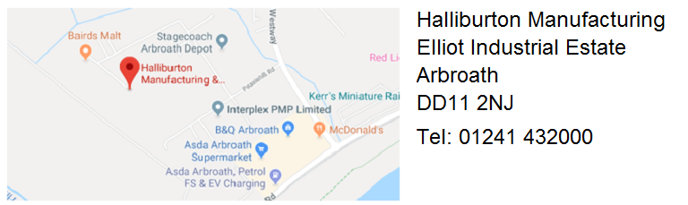
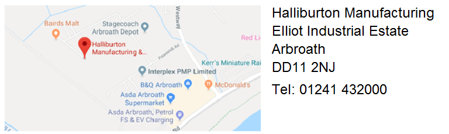
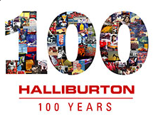

Introduction
Welcome to Halliburton Completion Technology and Manufacturing Center Arbroath. This facility has been in operation for over 45 years and is proud to be part of the Halliburton family.
This website has been designed to help you navigate through the vast amount of information which is presented to you as part of your induction and throughout your career.
We hope this will provide some useful information, pointers to other useful resources, and be available as an ongoing reference source.
Our Commitment to You
At Halliburton, we believe that it is important that all new employees are provided with a thorough induction/orientation to help them understand the organisation and their role within the facility.
During your initial induction you will be introduced to key people, who are here to help and support you during you employment with Halliburton. Halliburton is committed to providing ongoing support to all employees throughout their career.
If during your induction period you have any questions, please ask either your PGL/Supervisor, or your local HR or HRD Representative.

Halliburton's 100th Anniversary
Halliburton is proud to be celebrating its 100th anniversary. Founded in 1919, Halliburton is one of the world's largest providers of products and services to the energy industry. Halliburton's fascinating and proud history reveals a continuous focus on innovation and expansion that began with the company's founder, Erle P. Halliburton. After borrowing a wagon, a team of mules and a pump, he built a wooden mixing box and started an oil well cementing business in Duncan, Oklahoma.
What started with a single product from a single location is now a global enterprise. We are proud to celebrate a 100 years of innovation, collaboration, and execution. To learn more click on the 100 icon above.